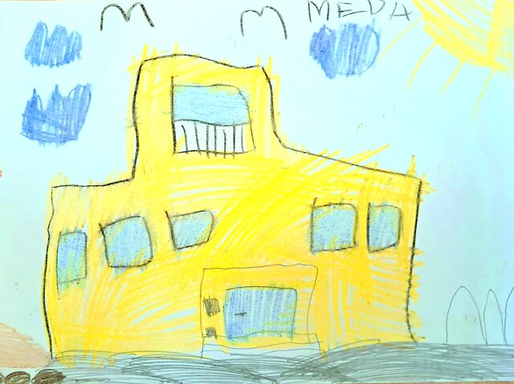
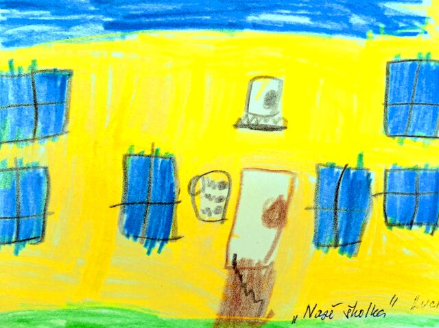
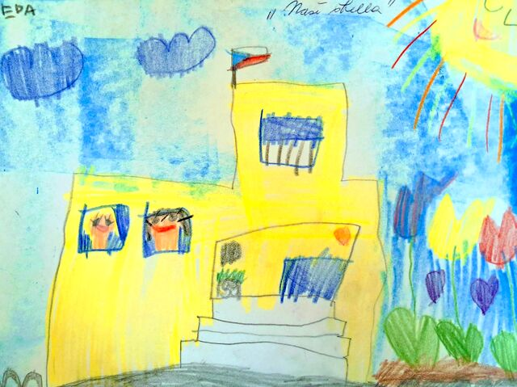
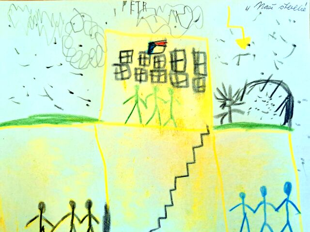
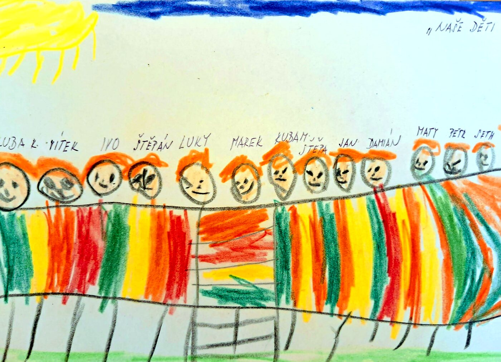

Herny, ložnice a šatny
Dětem jsou k dispozici tři samostatné herny, dvě ložnice, sociální zařízení a šatny. V hernách je vytvořeno několik hracích koutů – relaxační, kuchyňský nebo výtvarný.
Mateřská škola s rozlehlou zahradou v klidném prostředí rodinné zástavby v Brně-Žabovřeskách. Tři smíšené třídy, vlastní kuchyně a stabilní tým, který se o děti stará s respektem a laskavostí.
Kdo jsme
Mateřská škola se nachází v účelové budově v klidném prostředí rodinné zástavby a obklopuje ji rozlehlá školní zahrada. Součástí školy je vlastní školní kuchyně.
Škola je trojtřídní – třídy Zajíčků, Ježečků a Veverek – a navštěvuje ji 71 dětí ve věku od 3 do 6, případně 7 let. Třídy jsou smíšené, takže se děti přirozeně učí spolupracovat a pomáhat si napříč věkem.
Zřizovatelem školy je Statutární město Brno, městská část Brno-Žabovřesky. Díky vstřícnosti zřizovatele dochází každoročně k potřebným opravám a vylepšením budovy i zahrady.
Vybavení školy
Dětem jsou k dispozici tři samostatné herny, dvě ložnice, sociální zařízení a šatny. V hernách je vytvořeno několik hracích koutů – relaxační, kuchyňský nebo výtvarný.
Nadstandardně jsme vybaveni pomůckami pro tělovýchovné a sportovní aktivity – akupresurní podložky, padák, švédská bedna a další nářadí i náčiní pro pravidelné cvičení dětí.
Všechny hračky a vybavení tříd splňují bezpečnostní požadavky. Vybavení hračkami, didaktickým materiálem a pomůckami průběžně doplňujeme a obnovujeme.
Jak naši školku vidí děti ze tříd:




Školní zahrada
Rozlehlá školní zahrada je jedním z největších bohatství naší školky. Děti tu tráví každý den podstatnou část dopoledne i odpoledne – hrají si, zkoumají, pěstují a pozorují proměny přírody.
Zahrada je zároveň hlavním prostorem pro environmentální výchovu – zahradní laboratoř, pozorování lupou a mikroskopem i eko-technické projekty.
Náš tým
Stabilní tým je základní pilíř bezpečí. Děti u nás vítají známé tváře, které je podporují, motivují a provázejí jejich růstem.

Kateřina Pálková – podpora dětí i pedagogů v běžném dni mateřské školy.
Kateřina Pálková – vedoucí stravovacího provozu
Michaela Hašková a Gabriela Víšková – kuchařky
Provoz školy
Mateřská škola je otevřená každý všední den. Děti prosím přiveďte nejpozději do 8.30 hodin.
Nástup do mateřské školy je velká změna – pro dítě i pro rodiče. Postupujeme individuálně, podle tempa každého dítěte, a rodičům dáváme jasnou oporu i konkrétní doporučení.
Denní řád je pružný – umožňuje reagovat na potřeby dětí i na aktuální dění a počasí.
Domluvte si s námi návštěvu nebo se zeptejte na cokoli, co vás zajímá. Rádi vám školku ukážeme.